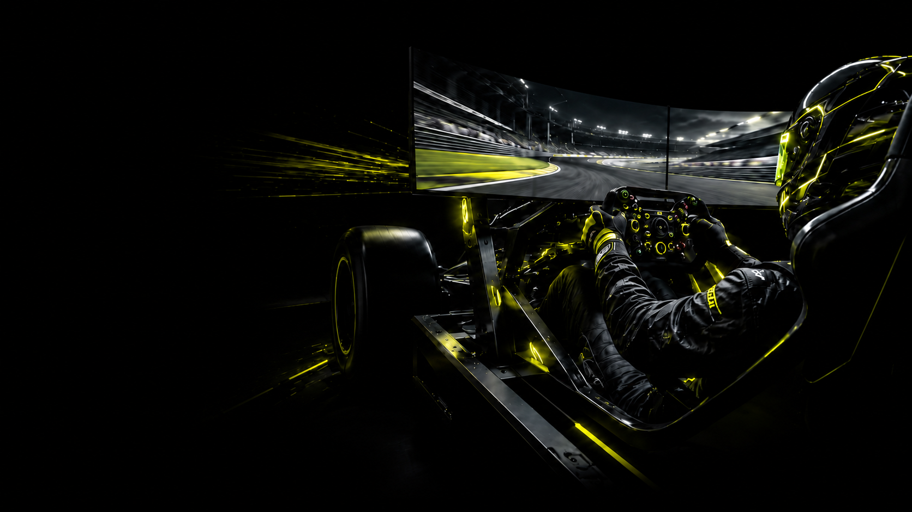
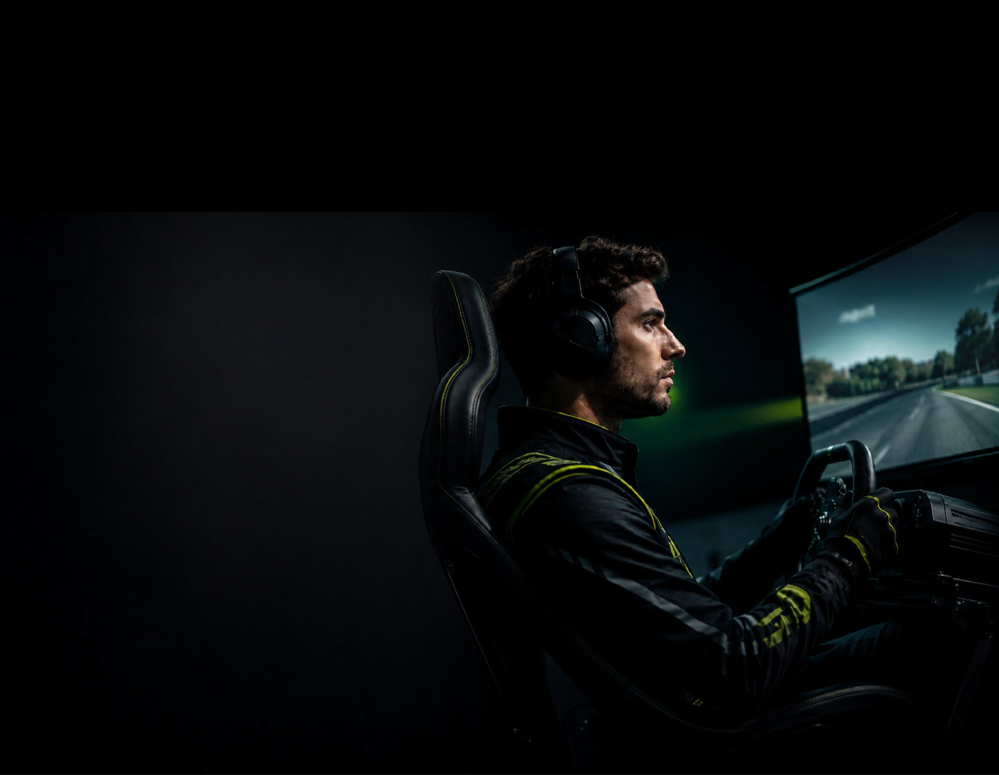

Amarillo
#E4FF14
Color de acento principal; se usa en botones, datos importantes, hovers y llamados a la acción.
 Registrarme
Registrarme
Una biblioteca visual creada para traducir el universo del automovilismo virtual en una experiencia digital clara, técnica y competitiva.
01 Tipografías
Victor Mono para identidad visual, títulos y destacados; Inter para lectura, datos y componentes funcionales.
02 Paleta
La paleta combina una base oscura e inmersiva con acentos de alta visibilidad.
#E4FF14
Color de acento principal; se usa en botones, datos importantes, hovers y llamados a la acción.
#50AEB0
Color secundario del sistema. Funciona como señal técnica para etiquetas, puntos interactivos y navegación.
#FFFFFF
Color principal para lectura. Se utiliza en textos, títulos y elementos que necesitan máxima claridad.
#000000
Base del sistema. Refuerza la idea de tecnología, precisión y profundidad.
03 Cards
Las cards del sistema ordenan programas, información del curso y testimonios usando las estructuras reales aplicadas en la web.
Versión de la sección “Nuestros cursos”: placas técnicas cian con nivel, objetivo, complejidad, precio y CTA.

Ideal para quienes quieren dar sus primeros pasos y construir una base competitiva.

Ideal para quienes ya corrieron ligas online y necesitan consistencia y resultados.

Ideal para quienes buscan competir con análisis de datos y preparación avanzada.
Versión de la sección 02: panel de telemetría interactivo + ficha técnica del curso.
Entrenamiento técnico para mejorar tu rendimiento con telemetría, análisis de datos y comparación de vueltas.
Detectar dónde se pierde tiempo.
Usadas en el carrusel de experiencias.
“Aprendí a entender mis errores vuelta por vuelta. Antes solo intentaba ir más rápido, ahora sé exactamente dónde estoy perdiendo tiempo.”
“La comparación de telemetría me cambió completamente la manera de entrenar. Empecé a ser mucho más constante en tandas largas.”
“El seguimiento del coach fue clave. No era solo bajar tiempos, era entender por qué tomaba cada decisión dentro de la pista.”
“Me ayudó muchísimo para competir con más seguridad. La práctica de clasificación bajo presión fue de las partes que más me sirvió.”
04 Imágenes
Las imágenes combinan realismo, contraste y acentos de color para construir una atmósfera inmersiva.

Contraste alto y foco amarillo para enfatizar acción.

Producto aislado para destacar detalle técnico.

Oscuridad, profundidad y foco sobre la pantalla.

En mobile se prioriza el sujeto y la información clave.
05 Interacciones
Las interacciones reales de APEX acompañan el recorrido: orientan, revelan información y refuerzan la sensación de precisión técnica del sim racing.
Transición negra de entrada y cambio de página, con la marca APEX centrada como elemento principal.
Los puntos del circuito abren una card contextual cercana al número, sin abandonar el mapa.

Lectura de datos para detectar frenada, aceleración y trazada.
En Advanced, cada etapa activa un dato distinto y completa la barra de progreso del entrenamiento.
Lectura inicial de vuelta, frenada, trazada y salida.
Los cuadraditos señalan zonas explorables del volante y activan un texto explicativo.
Tocá cada zona para ver su función dentro del simulador.
En Advanced, la pantalla queda fija y las clases se desplazan horizontalmente con el scroll.
Qué datos mirar y por qué son clave.
Velocidad, frenado, aceleración y trazadas.
Diferencias concretas en tiempo y decisión.
Presión, liberación y entrada en curva.
Los coaches se presentan en paneles expandibles para mostrar imagen, rol y especialidad.
La galería horizontal permite recorrer circuitos reales y mostrar datos al hacer hover.